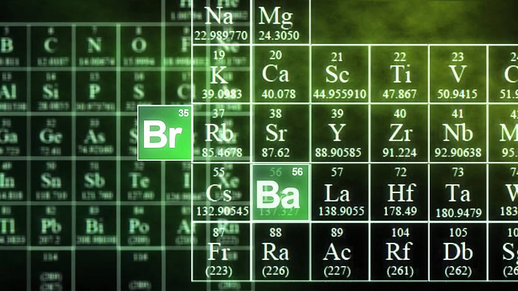

About B.Sc.,CHEMISTRY (A Bachelor of Science in CHEMISTRY)
BSc Chemistry is an undergraduate course in chemistry, which is ideal for the students who wish to have an in-depth knowledge of the subject. The course curriculum deals with various aspects of chemistry including chemical reactions and chemical composition of substances.
The core subjects of the course include physical chemistry, organic chemistry and inorganic chemistry. Along with that, the students will have to choose from the list of elective subjects.
• Bachelor of Science in Chemistry is a specialized course for students who wish to acquire knowledge on the fundamentals of chemistry and various chemical reactions.
• The course focuses on the various branches of Chemistry which include physical chemistry, organic chemistry and inorganic chemistry.
• The program is meant to prepare the students for a prosperous career in the chemical industry.
• BSc Chemistry centres around topics like atomic structure, organic chemistry, molecular chemistry, application of computers in chemistry, green chemistry, chemo informatics and many more.
Career Options and Job Prospects
There are plenty of BSc Chemistry jobs available for potential candidates. The students become eligible enough to get job opportunities in various private and public sectors.

Here, we have listed some of the most common job profiles of BSc Chemistry students: Chemist, Pharma Assistant, Clinical Research Associate, Lab Assistant, Toxicologist.
Future Scope
There are hardly any limits to BSc Chemistry scope as there are plenty available. After successfully completing the course one may pursue an M.Sc in various fields. Apart from looking for jobs in various private and government sectors, there are various opportunities for research in this field as well. There are a number of colleges which offer M.Sc in Chemistry and related fields in India. Some of these courses include
• M.Sc in Organic Chemistry
• M.Sc in Applied Chemistry
• M.Sc in Industrial Chemistry
• M.Sc in Pharmaceutical Chemistry
• M.Sc in Biochemistry
Pursuing any of the above master courses in chemistry will not only enhance the knowledge of the subject, but will also take an individual a step ahead to have a great career prospect both in terms of work and research studies. One may also start their own business or open up a chemical laboratory for experimentations.